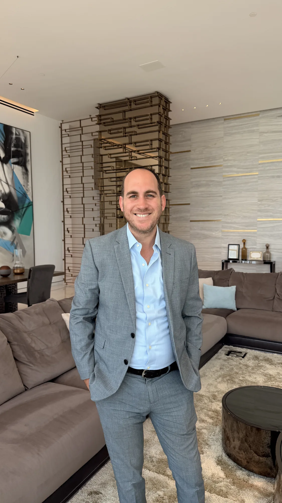
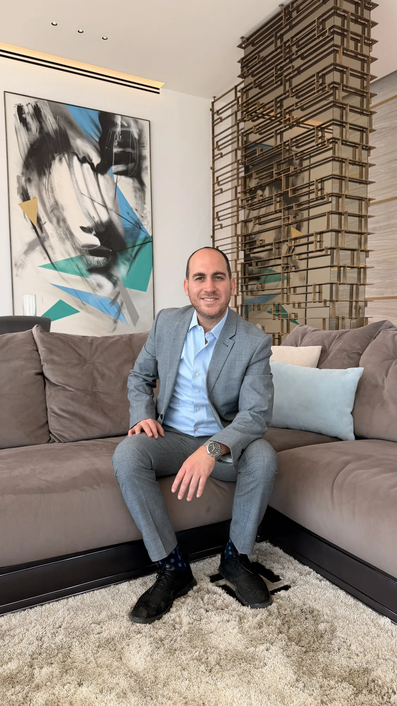

היכרות עם המקום
נתניה היא יותר מרשימת כתובות. אני עוזר להבין את האופי של כל אזור ואת ההתאמה שלו לחיים שאתם ואתן רוצים לבנות כאן.
PERSONAL REAL ESTATE ADVISORY · NETANYA
נדל"ן הוא קודם כול החלטה אישית. אני מלווה קונים, קונות, מוכרים ומוכרות בנכסי יוקרה בנתניה, עם היכרות מקומית, שיחה ישירה ותשומת לב לפרטים שמשנים את התמונה.
A personal perspective on luxury real estate in Netanya.
For buyers and sellers in Israel and abroad.

כל נכס הוא סיפור אחר. כל מעבר מתחיל מצורך אחר. לכן העבודה שלי מתחילה בשיחה שמבהירה מה באמת חשוב לכם ולהן, ורק משם עוברת לנכסים, לאפשרויות ולהחלטות.
נתניה היא יותר מרשימת כתובות. אני עוזר להבין את האופי של כל אזור ואת ההתאמה שלו לחיים שאתם ואתן רוצים לבנות כאן.
שיחה עניינית, מידע רלוונטי וליווי לאורך הדרך, כדי שתוכלו להתקדם בקצב שמתאים לכם ולהן.
גם כשאתם ואתן מעבר לים, יש עם מי לדבר כאן. אני נשאר זמין לשאלות ולשלבים הקטנים שבין ההחלטות הגדולות.

אני ארי (צ'רלס) אשכנזי. אני מלווה אנשים שמחפשים בית בנתניה ואנשים שמבקשים למכור נכס בעיר. חשוב לי להבין את האדם שמאחורי הבקשה, לדבר בכנות ולעשות סדר בדרך.
אני עובד עם לקוחות מהארץ ומהתפוצה, בעברית ובאנגלית. השיחה מתחילה במה שחשוב לכם ולהן.
שותף בסניף נתניה של Davidson Real Estate.
בואו נכירBuying or selling from another country calls for clear conversations and a trusted point of contact on the ground. I work personally with clients in Israel and abroad, in English and Hebrew.
Start a conversationLET'S TALK / בואו נדבר
יש לכם ולהן שאלה על קנייה או מכירה בנתניה? כתבו לי בכמה מילים מה אתם ואתן מחפשים, ואחזור אליכם ואליכן.